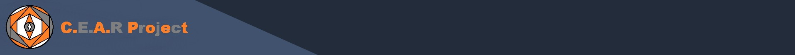
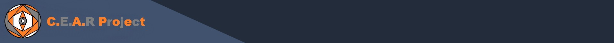
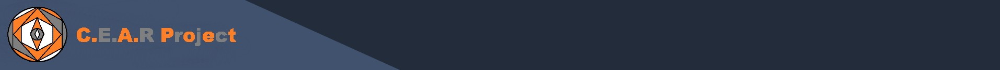
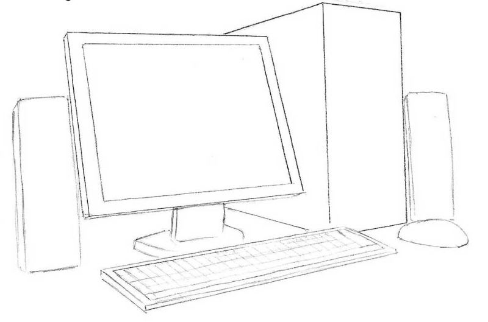
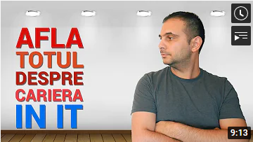

Ce este o carieră în IT & TECH?
Cum imi aleg cariera în IT?
IT
TECH
HTML/CSS

Ce este o carieră în IT & TECH?
Cum imi aleg cariera în IT?
IT
TECH
HTML/CSS



IT & TECH
VIDEO-URI YOUTUBE
O CARIERA IN IT&TECH
Definiția generală a IT-ului sau Tehnologiei Informației este tehnologia necesară pentru prelucrarea informației, în particular prin folosirea computerelor, însă noi vedem IT-ul ca pe un domeniu în continuă schimbare și dezvoltare, căutat pentru salariile bine plătite, dar și pentru entertaining-ul personal. Însă, acest domeniu produce multe confuzii în rândul persoanelor, cele mai des întâlnite fiind:
1. "Industria IT si TECH este o comuninate închisă, în care este greu să te introduci."
De fapt, industria IT este extrem de variată. În comuninatea persoanelor ce lucrează în această industrie se regăsesc persoane de toate vârstele, din medii sociale diferite și din toată lumea. Exemplu, România se află pe locul 6 pe plan internațional și pe primul loc în Europa cu cei mai mulți angajați în industrie.
2. "IT-ul se axează numai pe programare"
O confuzie întâlnită foarte des este asumarea totală IT-ului cu programarea/coding. În industria IT există job uri ce nu implică programare, aceste job uri fiind și bine plătite. Însă cunoștiintele despre coding , chiar și cele de baza, te vor ajută foarte mult , chiar dacă lucrezi în IT sau nu.
Că să răspund la prima întrebare,
Ce este o carieră în IT & TECH?
O carieră în IT & TECH este o alegere ce oferă posibilitatea nu numai unei dezvoltări individuale, dar și colective, indiferent de factorul ce determina să alegi această industrie.
Trebuie să știi ce îți dorești și ce te pasionează să faci.Pe lângă, trebuie să știi și că IT-ul este și devine din ce în ce mai prezent în orice industrie – retail, design, bănci, sănătate și nu numai. Practic, IT-ul oferă infrastructură și instrumentele necesare fiecărei organizații, astfel această industrie îți oferă o mulțime de posibilități. Descrierile joburilor sunt, la rândul lor, diverse. Sunt joburi care necesită mai multă capacitate de analiză sau mai multe abilitați de interacțiune umană. Sunt joburi care merg mai mult în direcția tehnică sau în cea creativă. Opțiunile sunt nelimitate.